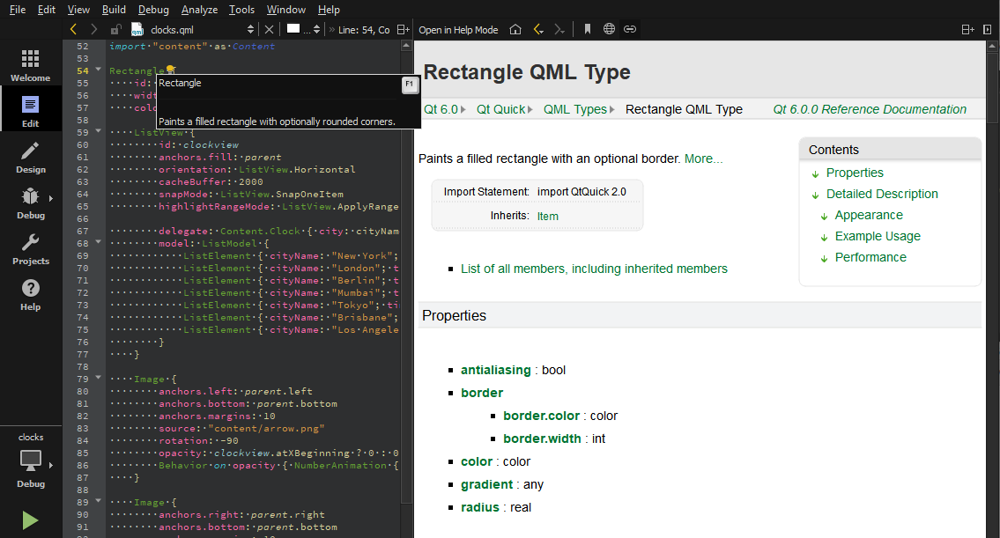
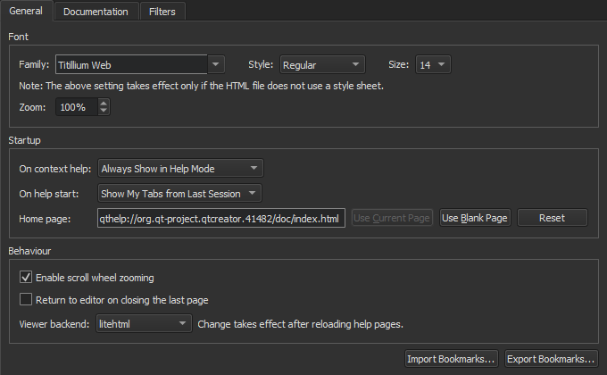
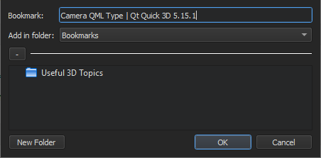
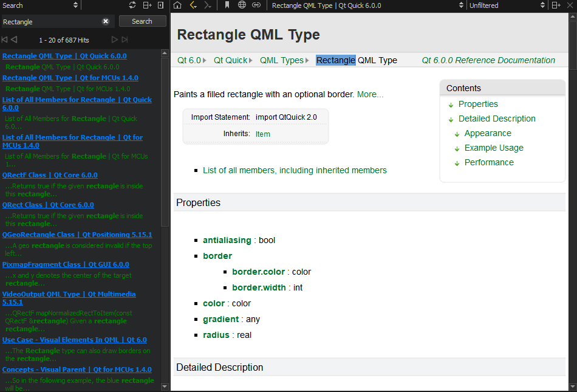
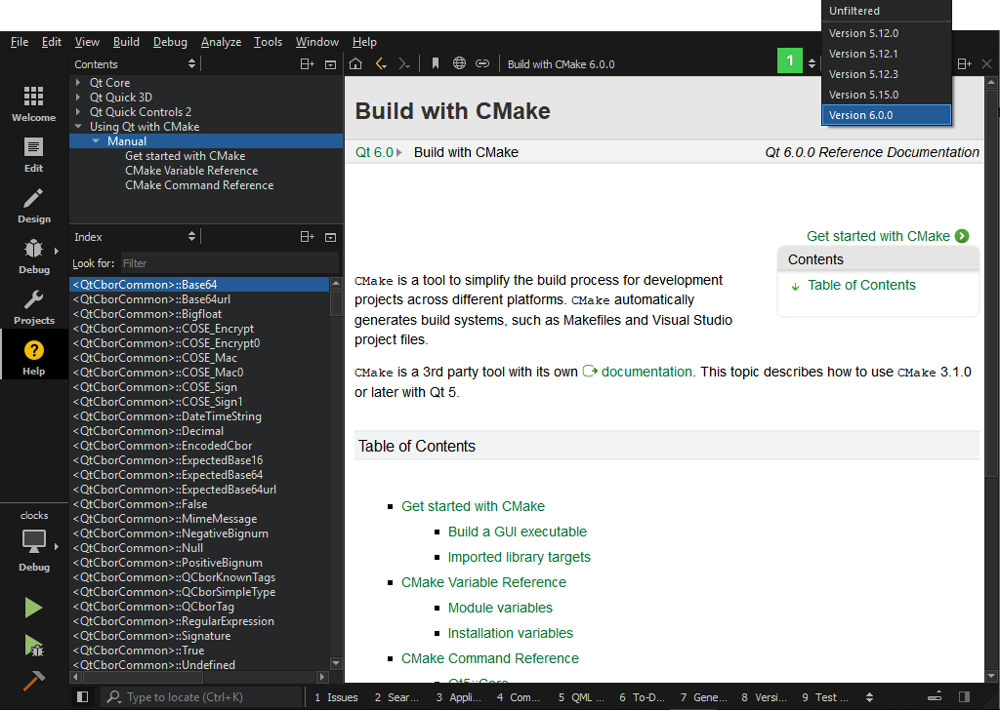
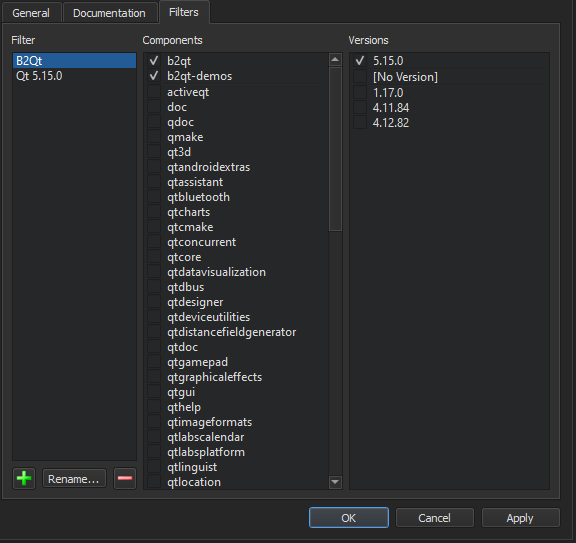

Using the Help Mode
Qt Creator comes fully integrated with Qt documentation and examples using the Qt Help plugin.
- To view documentation, switch to Help mode.
- To view context sensitive help on a Qt class or function as a tooltip, move the mouse cursor over the class or function. If help is not available, the tooltip displays type information for the symbol.
- To display tooltips for function signatures regardless of the cursor position in the function call, press Ctrl+Shift+D.
- To display the full help on a Qt class or function, press F1 or select Context Help in the context menu. The documentation is displayed in a view next to the code editor, or, if there is not enough vertical space, in the fullscreen Help mode.
- To select and configure how the documentation is displayed in the Help mode, select Tools > Options > Help.
The following image displays the context sensitive help in the Edit mode.

If the help HTML file does not use a style sheet, you can change the font family, style, and size in Tools > Options > Help > General.

You can set the default zoom level in the Zoom field. When viewing help pages, you can use the mouse scroll wheel to zoom them. To disable this feature, deselect the Enable scroll wheel zooming check box.
To switch to the editor context when you close the last help page, select the Return to editor on closing the last page check box.
The help viewer backend determines the style sheet that is used to display the help files. The default help viewer backend that is based on litehtml is recommended for viewing Qt documentation. You can choose another help viewer backend in the Viewer backend field. To take the new backend to use, reload the help page.
Viewing Function Tooltips
To hide function tooltips by default, select Tools > Options > Text Editor > Behavior > Show help tooltips using the mouse > On Shift+Mouseover. You can still view the tooltips by pressing and holding down the Shift key.
To use a keyboard shortcut for viewing help tooltips, select Show help tooltips using keyboard shortcut (Alt).
Finding Information in Qt Documentation
Qt Creator, Qt and other Qt deliverables contain documentation as .qch files. All the documentation is accessible in the Help mode.
By default, Qt Creator registers only the latest available version of the documentation for each installed Qt module. To register all installed documentation, select Tools > Options > Kits > Qt Versions > Register documentation.
To find information in the documentation, select:
- Bookmarks to view a list of pages on which you have added bookmarks.
- Contents to see all the documentation installed on the development PC and to browse the documentation contents.
- Index to find information based on a list of keywords in all the installed documents.
- Open Pages to view a list of currently open documentation pages.
- Search to search from all the installed documents.
Adding Bookmarks to Help Pages
You can add bookmarks to useful help pages to easily find them later in the Bookmarks view. You can either use the page title as the bookmark or change it to any text. You can organize the bookmarks in folders in the view.

To add a bookmark to an open help page:
- Click the
 (Add Bookmark) button on the toolbar.
(Add Bookmark) button on the toolbar. - In the Add Bookmark dialog, click OK to save the page title as a bookmark in the selected folder.
To import and export bookmarks, select Tools > Options > Help > General > Import Bookmarks or Export Bookmarks.
Full-text Search
In the Search pane, you can use full-text search for finding a particular word in all the installed documents. Enter the term you are looking for, and select the Search button. All documents that contain the specified term are listed. The list is sorted by document version (if you have installed several Qt versions, for example) and the number of search hits that the documents contain. Select a document in the list to open it.

The following are examples of common search patterns:
deeplists all the documents that contain the worddeep. The search is not case sensitive.deep*lists all the documents that contain a word beginning withdeepdeep copylists all documents that contain bothdeepandcopy"deep copy"lists all documents that contain the phrasedeep copy
Full-text search is based on indexing all the installed documents the first time when you open the Search pane. If you add or remove documents, Qt Creator recreates the index.
If you cannot find words that you know are there, indexing might not have been completed for some reason. To regenerate the index, click (Regenerate Index).
Punctuation is not included in indexed terms. To find terms that contain punctuation, such as domain names, use the asterisk as a wild card. For example, to find Pastebin.Com, enter the search term Pastebin*.
Adding External Documentation
You can display external documentation in the Help mode. To augment or replace the documentation that ships with Qt Creator and Qt:
- Create a .qch file from your documentation.
For information on how to prepare your documentation and create a .qch file, see The Qt Help Framework.
- To add the .qch file to Qt Creator, select Tools > Options > Help > Documentation > Add.
Detaching the Help Window
By default, context-sensitive help is opened in a window next to the code editor when you press F1. If there is not enough vertical space, the help opens in the full-screen help mode.
You can specify that the help always opens in full-screen mode or is detached to an external window. Select Tools > Options > Help > General and specify settings for displaying context-sensitive help in the On context help field. To detach the help window, select Always Show in External Window.
To change this setting in a help view, select the  toolbar button.
toolbar button.
Selecting the Start Page
You can select the page to display when you open the Help mode in the Tools > Options > Help > General > On help start field. To display the page and help views that were open when you exited the mode, select the Show My Tabs from Last Session option. However, Web pages are not opened, because loading them would slow down opening the Help mode.
To display a particular page, select Show My Home Page, and specify the page in the Home Page field.
To display a blank page, select the Show a Blank Page option. You can also select the Use Blank Page button to set a blank page as your home page.
Using Documentation Filters
You can filter the documents displayed in the Help mode to find relevant information faster. Select a filter from a list of filters (1). The contents of the Index and Contents view in the sidebar change accordingly.

You can define your own filters to display documentation for a set of Qt modules and versions.
To add filters:
- Select Tools > Options > Help > Filters.

- Select
 to add a new filter in the Add Filter dialog.
to add a new filter in the Add Filter dialog. - In the Filter name field, enter a name for the filter, and then select OK to return to the Filters tab.
- In the Components field, select the Qt modules to include in the filter.
- In the Versions field, select the Qt versions to include in the filter.
- Click OK.
- In the Help mode, select the filter in the list of filters to see the filtered documentation in the sidebar.
To modify the selected filter, add and remove Qt modules and versions, and then select Apply.
To rename the selected filter, select Rename.
To remove the selected filter select  .
.